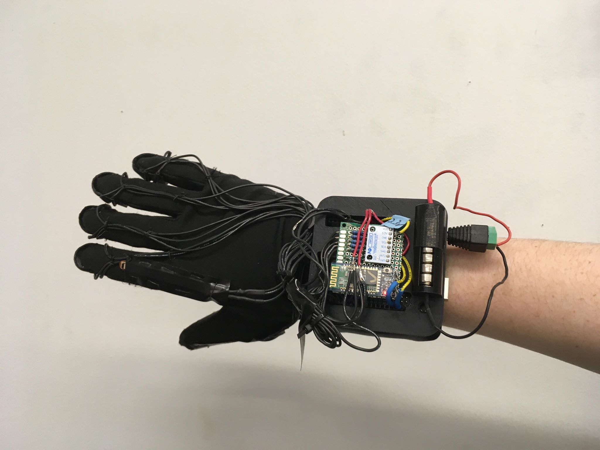
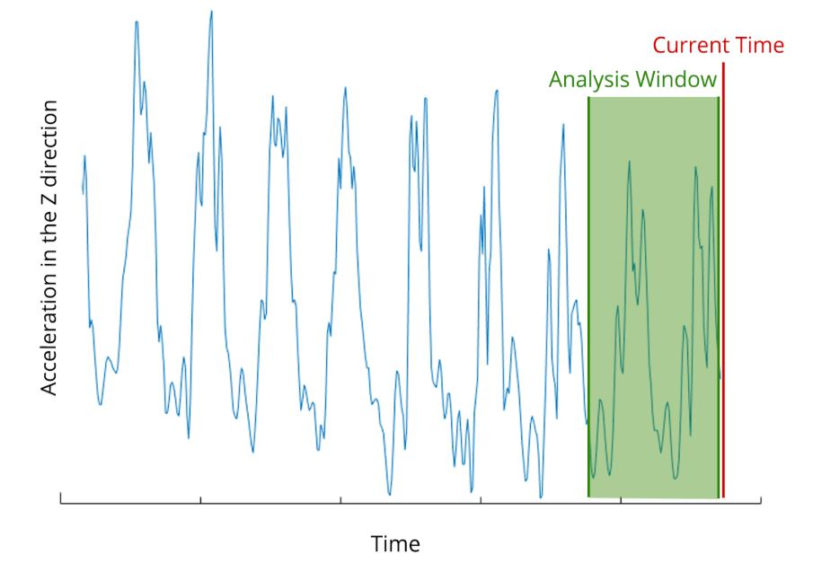

Projects
Internship at The Aerospace Corporation
I was a Technical intern at The Aerospace Corporation in the Visualization and Immersive Technologies Department during the summer of 2019. I built responsive full stack web apps using React, Redux, and MongoDB. I also worked on a team to design and build a web app for voice communication by following the engineering design process from user interviews to a final prototype. Click here to see my intern outbrief slides.

Classifying Movie Posters
My project partner and I used Matlab to experiment with three different methods of classifying movie posters based off genre, specifically differentiating between Romance and Science Fiction movie posters. Our methods included simple cutoff based off average brightness of the image, using and Eigenfaces approach on an image matrix including color, and using linear regression on an image matrix including color. Click to see our github repository.

Musical Glove
I worked on a team of five to make a glove that turns hand movements into music for the second-year class Principles of Engineering. I worked with electrical design, soldering, getting sensors to work, Arduino code, and bluetooth communication. I also made the website, which you can click on the picture to visit.

Lighting Director
I was the lighting director for my college’s Fall production of “A Gentleman’s Guide to Love and Murder” and Spring production of "Almost Maine." I designed the light cues in the weeks leading up to the show, and then programmed the light board during tech week, and ran the light board during rehearsals and performances.

Interactive Visualization
My project partner and I designed a customizable interface for interactive art in pygame, where the user moves their mouse to draw shapes. The user can choose between several different types of shapes (circles, squares, triangles, bowties, hexagons), and different color palettes. The user can also change the size of the shapes, mirror their drawing, or animate the shapes to make them fall, scroll, scatter, or bounce. Click to see our github repository.

Electromyogram
I worked in a group of three to make an Electromyogram for the Olin First-Year class Introduction to Sensors, Instrumentation, and Measurement. An electromyogram (EMG) is a device that measures electrical muscle activity. Our EMG consisted of a circuit to amplify and filter the signal from three electrodes placed on the skin. Click to see our poster.
Time-Based Website Background
During my Software Design class, I worked in a team to use both Python and Javascript to make a website background generator. The generator makes a gradient website background based on the website visitor’s time of day, combined with a randomly generated foreground image. Click to see our Github repository.
Passive Solar House Model
I worked with one other person to design and model a passive solar house that would stay at a comfortable temperature all year round in the Northeast US without needing any heat or air conditioning. Some of the design choices we used to achieve this were a concrete absorber in the floor, and south facing windows to let in more light in the winter than the summer.

Frequency Analysis of Poi Spinning
As the last project in the class Quantitative Engineering Analysis, we used the Discrete Fourier Transform to analyze the frequency of poi spinning in real time, using an accelerometer and an Arduino Nano. We tried to create glow poi that changed color or flashed on frequency changes, but sadly Matlab cannot communicate both ways with a Serial port.